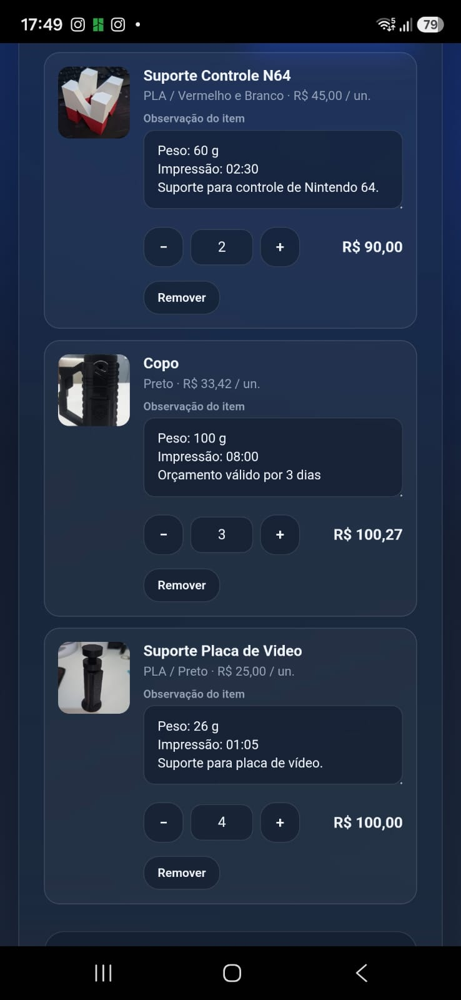
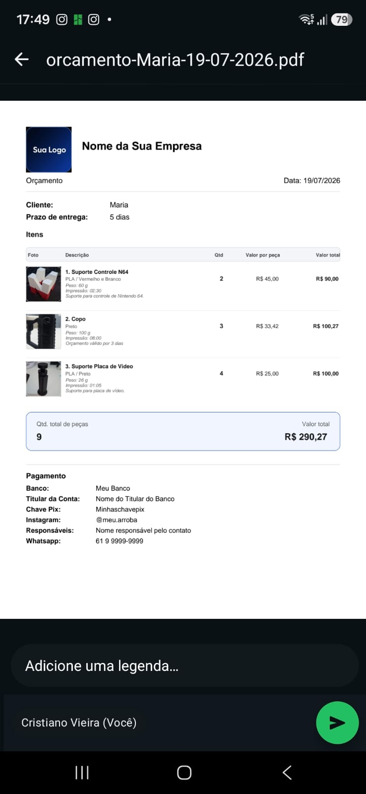

Brube Calc - Orçamento
Orçamento com peças do catálogo
Como montar um Orçamento
Monte o orçamento com várias peças do catálogo, ajuste quantidades e envie o PDF para o cliente.
1 Abrir Orçamento
Na tela inicial, toque em Orçamento.

2 Cliente e prazo
Preencha o cliente e o prazo de entrega. Em Itens do orçamento, toque em + Adicionar do catálogo.
Enquanto não houver itens, a quantidade e o valor total ficam em zero.
3 Escolher peças do catálogo
Pesquise se precisar, marque uma ou mais peças (ou use Marcar todos). O botão Adicionar selecionadas só libera com pelo menos uma marcada.
4 Ajustar quantidades
Cada peça vira um card com foto, material, preço unitário e observação (peso, tempo etc.). Use − e + para mudar a quantidade; o valor do item atualiza na hora. Remover tira a peça do orçamento.

5 Totais, observações e PDF
Role até o fim: veja a quantidade total de peças e o valor total. Preencha observações gerais se quiser. Os dados de Pagamento vêm das Configurações.
Toque em Salvar / Compartilhar PDF.
6 PDF do orçamento
O PDF traz logo, empresa, cliente, prazo, tabela de itens (foto, descrição, qtd, valor por peça e total), totais e dados de pagamento. No celular você envia por WhatsApp, Drive etc.
